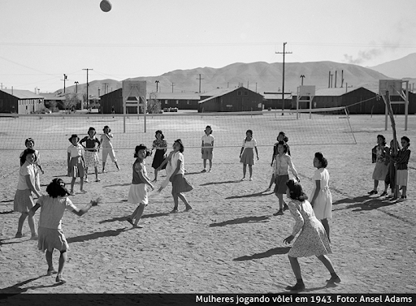
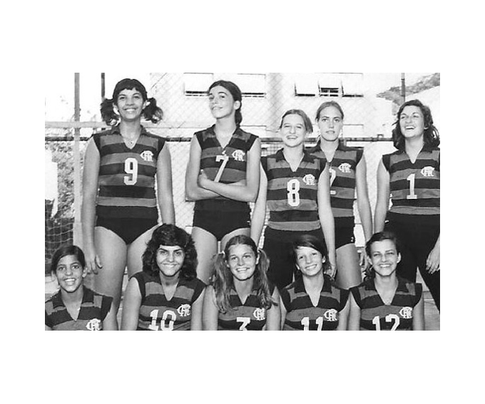
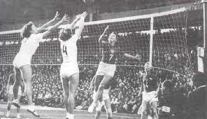
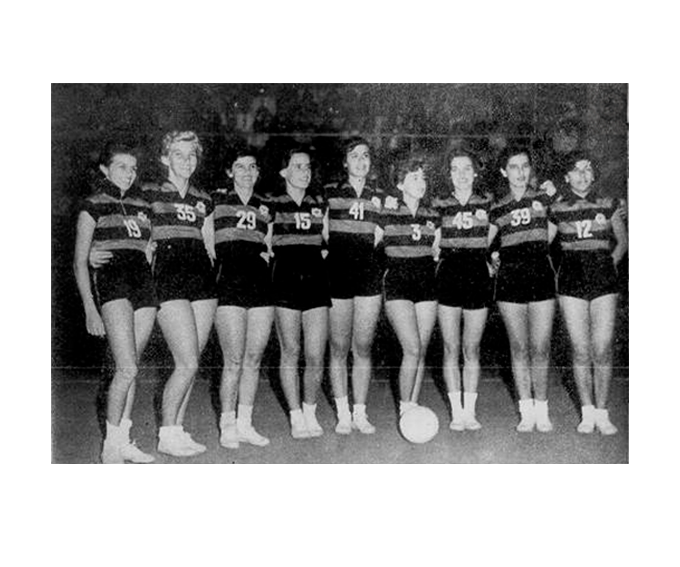

Universo do Vôlei
O esporte que vem conquistando cada vez mais espaço
O esporte que vem conquistando cada vez mais espaço
O voleibol foi criado em 1895 por William George Morgan, diretor de Educação Física da Associação Cristã de Moços (ACM) dos Estados Unidos.
O objetivo de Morgan era criar um esporte de equipes sem contato físico entre os adversários de modo a minimizar os riscos de lesão.
Inicialmente jogava-se com uma câmara de ar da bola de basquetebol e foi chamado Mintonette, mas rapidamente ganhou popularidade com o nome de volleyball.
A seleção brasileira de voleibol feminino foi formada em 1951, onde estreou jogando o Campeonato Sul-Americano daquele ano ficando com a medalha de ouro.
Em 1952 foi realizado o primeiro campeonato mundial para a categoria
Mesmo com pouca tradição no voleibol feminino na década de 50, o Brasil conseguiu manter destaque entre os melhores times das Américas, conquistando inúmeros títulos Sul-Americanos além de dois títulos Pan-Americanos, conquistados em Chicago 1959 e outro mais tarde em São Paulo 1963.
O voleibol feminino do Brasil só começou a despontar mesmo no cenário internacional nos anos 90, especificamente em 1994 quando Bernardinho, treinador e ex-jogador de vôlei brasileiro, assumiu o comando da seleção.
A história da modalidade nas Olimpíadas tem um fato interessante e até incomum. Em Tóquio-1968, o vôlei entrou no programa olímpico simultaneamente no masculino e no feminino. Desde a estreia, quando a União Soviética, entre os homens, e o Japão, entre as mulheres, conquistaram as primeiras medalhas de ouro, a modalidade não deixou de ser olímpica.
Os times feminino e masculino disputavam um turno único, entrando em quadra apenas uma vez. Somente em 1972, nas Olimpíadas de Munique, é que o formato da competição ganhou fases de grupos, quartas de final, semifinais e final.
Vale lembrar que o vôlei possui variações reconhecidas no mundo todo e que têm espaço garantido nos Jogos Olímpicos. É o caso do vôlei de praia, que se tornou uma modalidade olímpica em 1996, durante os Jogos de Atlanta, depois de fazer uma demonstração na edição anterior, em Barcelona, no ano de 1992.
Temos também o vôlei sentado, que estreou em 1980, na Holanda, apenas com times masculinos. As mulheres ganharam espaço na modalidade somente nos Jogos Olímpicos de Atenas, sendo que as brasileiras só participaram no torneio pela primeira vez na edição de Londres 2012. Nesta competição podem participar apenas atletas com deficiências físicas e de locomoção.
O vôlei feminino do Brasil estreou nas Olimpíadas em 1980, nos Jogos Olímpicos de Moscou, ficando em sétimo lugar. De lá para cá o vôlei brasileiro marcou presença em todas as edições Olímpicas.
Foram 28 anos de muita luta até chegar ao lugar mais alto do pódio pela primeira vez. Na edição de Pequim, em 2008, as meninas do vôlei feminino conquistaram a tão sonhada medalha de ouro. Desde sua estreia,em 1980, a seleção brasileira feminina de vôlei havia subido ao pódio duas vezes para receber a medalha de bronze em Atlanta-1996 e Sydney-2000.
Ao todo, o time de vôlei feminino brasileiro conquistou cinco medalhas nas Olimpíadas, duas de ouro, uma de prata e duas de bronze.
